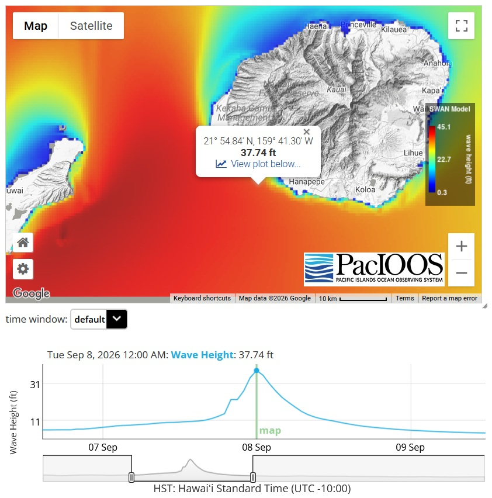

Mapping Hurricane Lowell's Winds, Hour by Hour
Speed
(mph)
Arrows show wind direction (pointing downwind), length ∝ speed. Color scale fixed at 0–85 mph for all hours, pseudo-log spaced on the same ramp as the gust map below; anything over 85 mph is shown in fuchsia. Station markers use the same scale: pills are Hawaiʻi Mesonet stations, rectangles other networks. CRS: WGS 84 (EPSG:4326). WindNinja 250 m grid from that hour's station observations, 10 m height · HCDP, experimental.
From the afternoon of September 7 into the morning of September 8, Hurricane Lowell passed close by Niʻihau and Kauaʻi as a Category 2 storm. Its brush with the islands brought powerful winds, heavy rains, and high seas. Kauaʻi is an island with very steep terrain, and the wind that blew across the mountain ridges and valleys was likely to have been stronger than the wind measured at any of the island’s weather stations, which are all located at lower elevations.
This set of experimental maps provides estimates of the wind speeds everywhere across the island. To make these maps, all available measurements from every wind station on the island are fed into a computer model along with topographic information to represent the interaction between air flow and the mountainous contours of the island. The computer model simulates how wind speeds up, slows down, and changes direction as it flows over mountains and through vegetation. The result is one map per hour showing the wind speed and direction averaged over that hour at every point on the island. Average hourly wind speed is always significantly lower than the highest wind speed during the hour. Wind speed varies constantly, with strong gusts and periods of lower wind speeds.
Hover the map to read the modeled wind at any point, step through the hours with the slider, and switch on the stations to compare the model with what was actually measured. Viewing the maps, a few things stand out. The strongest readings came from stations along the coast, at the Līhuʻe and Port Allen airports, while the strongest modeled winds are up on the ridgelines, as expected. The wind speeds built steadily through the afternoon and evening as Lowell closed in, roughly doubling between 4:00 and 9:00 PM, and stayed near its peak until midnight. It then eased through the early morning hours and was down to typical trade wind strength by late morning on September 8.
The peak hour was 11:00 pm on September 7. In that hour, Līhuʻe airport recorded an average wind speed of 56 mph, the highest measured hourly wind speed of the storm on Kauaʻi. In the same hour, the model wind speed was above 60 mph over about a third of the island and small patches along the highest ridges had winds above 85 mph. Estimated wind speed reached as high as 133 mph on the high ground between Mount Kāhili and the southwest side of Waiʻaleʻale, far inland above Kalāheo and Poʻipū.
Keep in mind that the modeled wind speeds are just estimates. The model has not been independently cross-checked for this storm. Use the viewer here to flip between wind on Oahu and Kauai, and click any station or grid on the map to see a time series of sustained winds for that location.
How Much Rain Fell, Day by Day
(inches)
Daily total from midnight to midnight HST. Color scale fixed at 0–30 inches, pseudo-log spaced, for all three days; stations use the same scale, circles for Hawaiʻi Mesonet stations and squares for other networks. CRS: WGS 84 (EPSG:4326). HCDP statewide daily rainfall map, 250 m grid, from station observations · experimental.
Rain from Lowell arrived a day ahead of the wind. On September 6, the storm's outer bands brushed the western islands while the center was still far to the southeast. Windward Oʻahu and the north side of East Maui caught the most, with the Kamananui gauge in the Koʻolau mountains measuring more than 9 inches and the West Wailuaiki gauge near Keʻanae more than 8 inches. Kauaʻi had a comparatively quiet day, with under 5 inches on Mount Waiʻaleʻale, one of the rainiest places on Earth.
As Lowell passed close to the island on September 7, almost the whole island received more than 2 inches of rain, and nearly half the island received more than 5 inches. The highest rainfall total was received at the summit of Waiʻaleʻale, where the gauge recorded just over 23 inches in 24 hours. A number that stands out is from the Hawaiʻi Mesonet station at Lower Limahuli on the north shore near Hāʻena, which received just over 15 inches on the 7th and more than 17 inches across the three days, the largest total of any Mesonet station in the storm. The Kilohana gauge above Hanalei also had more than 15 inches. The other islands, by then well clear of the storm, saw little more than an inch or two.
By September 8, the rain was easing but not over. Kauaʻi still picked up more than 8 inches on Waiʻaleʻale and around 5 on the ridges above Waimea, while the rest of the state returned to scattered showers. Over the three days, the mountain gauge on Waiʻaleʻale totaled almost 36 inches, and the map suggests the wettest spots in the interior received more than 3 feet of rain.
Use the buttons to zoom to each island and to switch between the three days. Hover the map to read the rainfall estimate at any point, and compare it with the stations, drawn as circles for the Hawaiʻi Mesonet and squares for stations from other networks. The map is filled in from those station readings, so it is most trustworthy near a station and most uncertain in areas at a distance from the nearest stations.
Kauaʻi Coastal Impacts Storm Surf
Lowell's center never touched land. It passed about 40 miles west of Niʻihau late on the night of September 7, by then a Category 2 hurricane after peaking as a Category 5 far out at sea. A huge swell built out of the south and southwest through the day and peaked that night, with breaking waves of 20 to 30 feet on Kauaʻi’s south and west-facing shores and a storm surge of several feet. No local buoy exists for the southwestern shores of Kauaʻi, however from the University of Hawaii PacIOOS’ Simulating WAves Nearshore (SWAN) model, shown here put wave heights near 38 feet in the open ocean just off the southwest coast around midnight.
The surge and surf flooded the low-lying grounds of the Sheraton resort at Poʻipū and damaged homes along the shore, buried the highway fronting Kekaha Beach under rock and pieces of broken seawall, and tore up the small boat harbor at Port Allen. Roads on the west side and north shore were left impassable by sand, boulders, and debris. The high surf warnings stayed up into September 8 as the swell slowly eased.
Visit University of Hawaii PacIOOS page for more information on historical and current ocean waves and conditions: https://www.pacioos.hawaii.edu/

Wind Gusts and Rainfall, Every 15 Minutes
Watch Hurricane Lowell unfold as the Hawaiʻi Mesonet saw it. Press play and the map steps forward 15 minutes at a time, with each step showing what the weather stations recorded over the hour that had just ended. Choose Gusts to see the strongest burst of wind each station felt in that hour, shown as a small “pill” that points the way the wind was blowing. The bigger and redder the pill, the harder it blew. Choose Rain to see how much rain fell in that hour, the redder the pill, the more rain the station received. The background image shows the view from the GOES-West weather satellite, also refreshed every 15 minutes: the brightest white marks the tallest, coldest storm clouds, so you can watch the rain bands sweep over the islands as the stations light up beneath them.
Click any station to see its whole storm charted below the map, drag the slider to any moment, or use the two buttons in the upper left corner of the map to jump straight to the station with the highest wind speed or rainfall of the storm or of the hour on screen. Hover over a station for its name and reading.
HCDP API token
This section replays the Hawaiʻi Mesonet's own observations straight from the HCDP API, and needs an HCDP API token to do so. The sections above work without one. Point the page at your token file, or paste the token.
or paste it directly
The token stays in this tab's sessionStorage for the session and
is never written to disk or sent anywhere but the HCDP API.